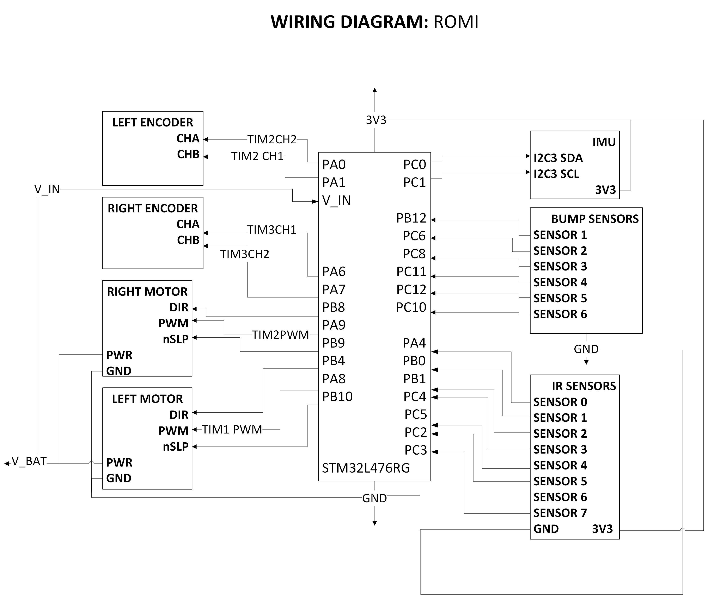

Hardware Design
Sensors
IR Sensors (Line Following)
BB uses infrared sensors for line following. The sensor array we selected (Pololu QTRX-MD-07A) has seven analog sensors spaced 8 mm apart (medium density). The microcontroller uses the sensor readings to calculate the centroid of the reflectance intensity. A medium density array was selected so that, when centered, the sensors cover the full width of the line with ample white space on either side. This ensures variation across the seven readings so that the calculated centroid is representative of the acutal robot position relative to the line. Analog sensors were selected over digital sensors because they have a higher resolution and allow for smoother control.
Bump Sensors
The bump sensors on BB are the standard Romi left and right bumper switch assemblies from Pololu (TI-RSLK MAX). The default state of the sensors is output high. When the switch is depressed, the output is driven low. All six bump sensors are wired to the microcontroller, but the software does not distinguish between the different sensors; the robot will have the same response regardless of which switch was depressed.
Other Components
Other essential hardware components, used by every group in the class, include the following:
STM32 L476RG Nucleo Board
Shoe of Brian
BNO055 IMU
Assembly
All components are mounted to the Romi chassis with screws, standoffs, and nuts. A acrylic adapter (provided by the instructor) provides an interface between the chasis and the development board.
Wiring
The wiring diagram for the microcontroller is depicted below.
{kind=link}

Wiring diagram